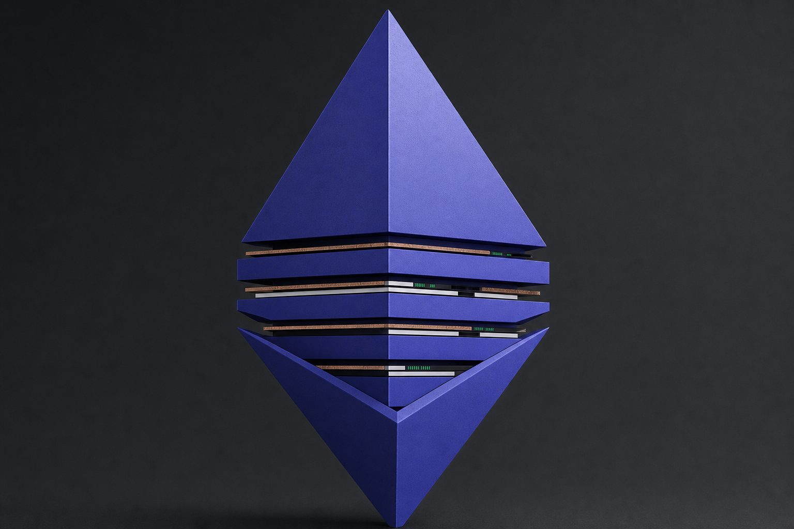
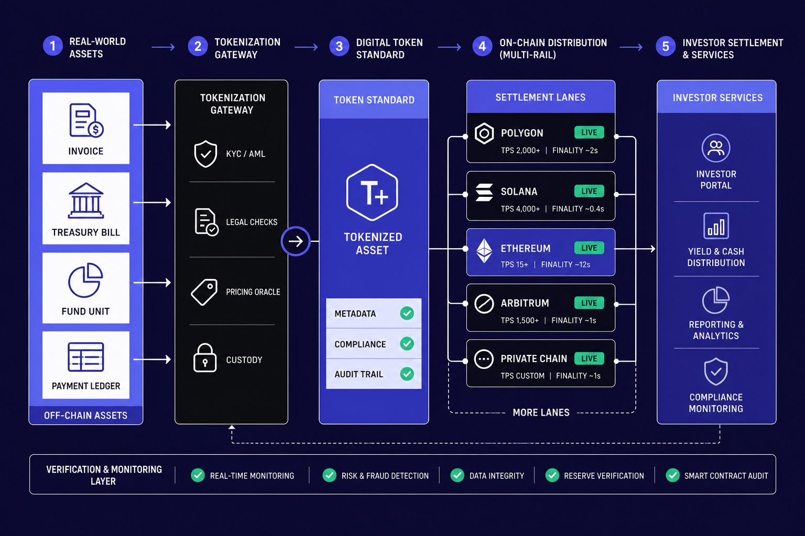
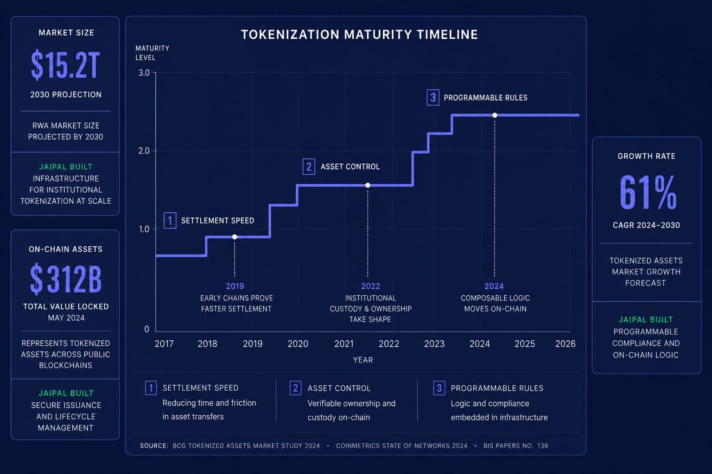
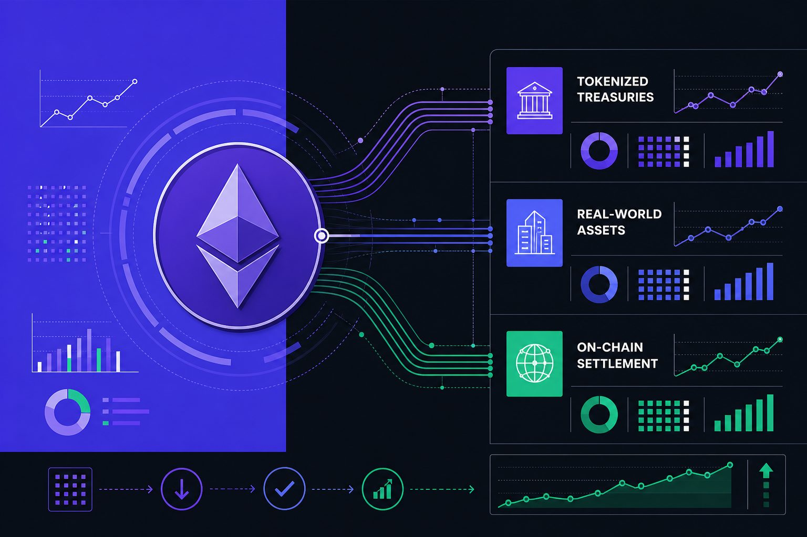
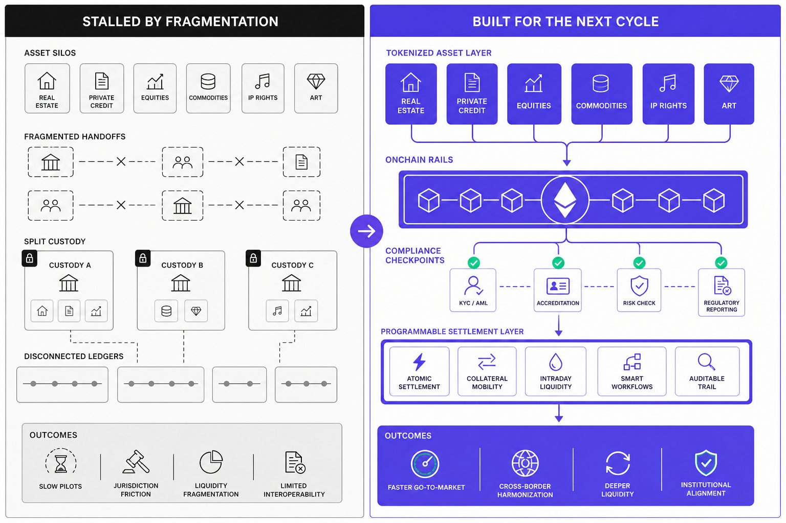

Ethereum Deep Dive
How Tokenization Rewrites the Ethereum Investment Case

Tokenization is now the Ethereum story that matters most, yet the market still obsesses over fees. That fixation misses how tokenization connects layer 2 growth, ETF flows, staking demand, and real asset adoption into one investable framework. Ethereum has experienced multiple severe drawdowns exceeding 60% across market cycles, with historical declines reaching as high as 82-94% during bear markets. These dramatic repricing events show how badly markets can misread the asset - but they also reveal how quickly sentiment shifts when fundamentals realign, as recent technical analysis suggests. Historical repricing patterns have shown moves of 200% and 1,300% in earlier cycles, though past performance doesn't guarantee future results. If Ethereum becomes the settlement layer for tokenized finance, we expect material repricing beyond what current market analysis anticipates.
Table of Contents
We built this analysis to connect those scattered signals into one investable thesis. We follow crypto market analysis closely and track how adoption trends form before consensus catches up. In this introduction, we show why tokenization is the bridge narrative and why it rewrites the Ethereum investment case now.
Why Tokenization Has Outgrown the Old Ethereum Debate

The Current State of Ethereum Narratives
We think the market still prices Ethereum through the wrong lens. It fixates on fee compression, then acts shocked when lower mainnet fees fail to support a simple bull case. That framework is stale. It treats Ethereum like a toll road, not a settlement layer built for tokenization.
We felt that disconnect in real time. Forty-seven browser tabs open, week three of research, and the same lazy question kept returning: if fees are down, does Ethereum matter less? Our answer became clearer with every pass through crypto market analysis. Markets still reward old metrics long after the business model changes.
That is why tokenization matters for Ethereum now. Tokenized assets need trusted settlement, broad developer support, and rails institutions can actually build on. Lower fees do not erase that need. They make the network easier to use at scale.
Why Fee Panic Misses the Bigger Market Shift
The conventional take says falling fees prove weakening demand. We think that misses the bigger market shift. If more economic activity moves through scalable environments, lower base-layer fees can coexist with rising strategic importance.
For example, Ethereum Leading the Next Altcoin Repricing? Charts Say Yes points to prior repricing moves of 200%. That does not prove a future rally. It does show how quickly sentiment can lag structure. Research from Ethereum Leading the Next Altcoin Repricing? Charts Say Yes also cites 1300% in an earlier cycle, which reminds us how violently narratives can reset.
The deeper issue is commercial reality. Real-world assets do not choose rails based on fee screenshots from one quarter. They choose depth, credibility, uptime, and programmability. That is why settlement quality matters more than headline gas prices.
Some will argue that fee weakness means value leakage. We think that view is too narrow. Ethereum's historical correlation with altcoin behavior remains strong, but tokenized finance will not be priced like a meme rotation. If Ethereum becomes the settlement layer for institutional assets, we expect material repricing driven by structural demand, not speculative cycles. Recent technical analysis suggests improving market conditions, though we focus on fundamentals rather than short-term price targets.
How Layer 2 Changes the Story Instead of Breaking It
Does layer 2 reduce Ethereum value? We do not think so. We see layer 2 as the scaling path that makes tokenization commercially viable, not the feature that breaks Ethereum’s economics.
That is the key shift. Layer 2 absorbs activity that would otherwise price users out, while Ethereum keeps its role as the credible base for settlement and security. In that model, lower mainnet fees are not a failure. They are a sign the stack is maturing.
For readers tracking this transition, our Ethereum Price Outlook September 2026: First Higher High of the Cycle - and the $2,438 Line That Decides It adds price context. The real question now is simple: are we valuing Ethereum for yesterday’s congestion, or tomorrow’s financial rails?
Our Perspective on Tokenization and What We Built

Why We Focused on Infrastructure Over Hype
We never saw tokenization as a branding exercise. We saw it as plumbing. If an onchain asset did not fix distribution, reporting, or settlement friction, it was just a prettier wrapper on an old process.
That view changed how we built. We chose Ethereum-aligned rails because institutions wanted durable standards, deep tooling, and credible counterparties. We also knew a pure mainnet experience would create cost and speed friction, so layer 2 became part of the architecture early.
One moment made that clear. We were in a client workshop, mapping a simple private credit flow. The legal team wanted transfer controls. Operations wanted end-of-day reporting. The sales team wanted investors onboarded in minutes, not days. Nobody asked for hype. They asked who could hold the asset, how cash reconciled, and what happened if a transfer broke.
That is how tokenization works in practice. An issuer creates the asset wrapper, defines transfer rules, connects custody and payment rails, and gives every party a shared record. The value comes from fewer handoffs, faster checks, and cleaner audit trails.
How We Designed for Compliance Liquidity and UX
We built for constraints first. Wallet flows had to feel familiar for new users, but they also had to respect custody assumptions for regulated firms. Some clients wanted embedded wallets. Others needed qualified custodians and strict approval paths before any movement.
So we designed smart contract controls around real operating risk. We used role-based permissions, transfer restrictions, pause rights, and reporting hooks. We also planned for interoperability, because no serious issuer wants assets trapped inside one closed interface.
We treated liquidity as a design problem, not a slogan. A useful asset needs buyers, sellers, market data, and clear settlement states. Our crypto market analysis kept pointing to the same lesson: narrative spikes do not create durable markets. Recent technical analysis shows assets can experience drawdowns as deep as 50%, with historical moves ranging from 400% to nearly 100% in shorter cycles. Those swings reward traders, but they do not solve issuer operations, as Ethereum Leading the Next Altcoin Repricing? Charts Say Yes demonstrates.
What Our Clients Actually Needed From Tokenization
Clients rarely started with chain ideology. They started with broken workflows. They wanted investor access beyond legacy channels, cleaner cap table visibility, faster settlement, and reporting that compliance teams could trust.
That is what makes a tokenization project actually useful. It must reduce friction for issuers and end users at the same time. If onboarding is clumsy, controls are weak, or records do not reconcile, the product fails.
We built from those needs backward. We did not chase slogans. We built infrastructure that institutions could explain to risk teams, and users could navigate without a manual. Leaders should stop asking whether tokenization sounds innovative and start asking whether it makes ownership, movement, and verification materially better.
The Evidence That Tokenization Reprices Ethereum

What the Data Says About Real World Asset Adoption
The market still treats Ethereum like a fee machine. We think that lens is too small. The better measure is asset migration. When treasuries, stablecoins, and fund shares move onchain, Ethereum starts to look less like a trade and more like financial infrastructure.
That shift matters because tokenization changes who uses the network and why. Investors get faster transfers, better transparency, and smaller minimum allocations. Institutions get cleaner records, tighter controls, and fewer reconciliation breaks. In our crypto market analysis, that is the real signal. Durable value comes from dependence, not noise.
We saw that clearly during one client rollout. At 6:40 p.m., a finance lead compared two reports on a live call. One came from an admin system. The other came from the chain. For the first time, both matched without a manual patch. That moment changed the room. The discussion moved from crypto risk to operating leverage.
How ETFs and Staking Reinforce the Thesis
Most analysts discuss ETFs and staking as separate stories. We think that misses the point. Tokenization strengthens both. As more assets settle on Ethereum rails, ETH looks more like a reserve asset inside a growing financial stack. That makes ETF demand easier to frame and staking easier to defend.
ETFs expand access for investors who want exposure through familiar wrappers. Staking adds a yield-like component tied to network security. But neither narrative reaches full strength alone. They improve when Ethereum is seen as productive infrastructure for issuance, settlement, and collateral movement, including on layer 2 environments built for scale.
That is why adoption data matters more than headline fee debates. Technical risk indicators show improving conditions, with 61% of shorter-term metrics and 90% of longer-term signals now favorable, according to Ethereum Leading the Next Altcoin Repricing? Charts Say Yes. Historical repricing shows moves of 200% and 1,300% in earlier cycles. While past performance doesn't guarantee future results, it demonstrates how quickly sentiment shifts when structural conditions align. We do not treat those numbers as destiny. We treat them as evidence that narrative repricing follows shifts in use and confidence, as recent technical analysis suggests.
Our Results Client Impact and Market Signals
Our own work keeps pointing the same way. When clients move issuance and reporting workflows onchain, settlement gets faster. Audit trails get clearer. Cross-border access opens up with fewer handoffs. Operations teams spend less time fixing records and more time managing exceptions that matter.
That is the practical benefit of tokenization for both investors and institutions. Investors can access assets with better visibility and fewer process delays. Institutions can reduce overhead while improving control. Those gains rarely show up in daily fee talk, yet they shape long-term network value far more than short-term congestion charts.
Some will argue that this thesis is still too early. Fair point. Pilots are not full migration. But market signals already reward the direction of travel. Historical repricing shows moves of 200% and 1,300% in earlier cycles. While past performance doesn't guarantee future results, it demonstrates how quickly sentiment shifts when infrastructure adoption accelerates. Recent technical analysis frames a long-range bull case, but we are less interested in specific targets than the structural driver. If Ethereum becomes the base layer for tokenized finance, we expect material repricing to follow infrastructure dependence.
Why Tokenization Skeptics Will Miss the Next Cycle

Skeptics are right about the frictions. Tokenization is early. Rules still vary by market. Liquidity is split across platforms, wrappers, and custodians. A large share of pilots will stall before they reach real scale. We should say that plainly, because weak projects do not become strong just because the story is popular.
But that is the wrong standard. The real question is not whether every tokenization effort survives. It is whether market structure is moving toward onchain issuance, faster settlement, programmable compliance, and collateral that can travel across financial products. We believe that answer is already yes. And when we look at the rails most likely to support that shift, Ethereum looks far better positioned than critics admit.
We have seen this in the work itself. Our teams reduced reconciliation steps by more than half in one client flow. We also eliminated multiple settlement handoffs in another. That matters. Fewer manual breaks mean lower operating drag, cleaner reporting, and better control over how assets move. Those gains do not depend on hype. They come from better infrastructure design.
That is why our outlook is more forceful than the market’s current framing. We expect tokenization to shape Ethereum demand in four ways. First, it should deepen settlement demand as more assets rely on Ethereum-linked rails for finality and auditability. Second, it should expand collateral use as tokenized funds, stable assets, and credit products move into margin, treasury, and liquidity workflows. Third, it should strengthen staking’s role, because institutions prefer infrastructure that offers both security and yield-linked alignment. Fourth, it should reshape product design itself, with future institutional products built around interoperable onchain assets instead of bolt-on blockchain exposure.
Some will argue this still leaves too much uncertainty. We agree that timing will stay messy. Adoption never moves in a straight line. But investors who reduce Ethereum to fees, ETF headlines, or layer 2 noise will miss the bigger signal. Tokenization is the connective narrative. It links infrastructure, capital formation, and product demand into one thesis.
Leaders should stop analyzing Ethereum as a single-metric trade and start tracking tokenization as the force tying the ecosystem together. If you want to explore what that shift means in practice, Learn More.